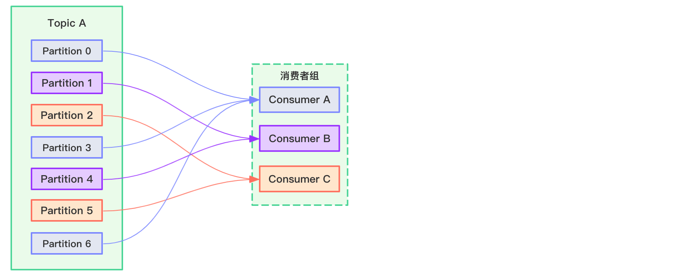
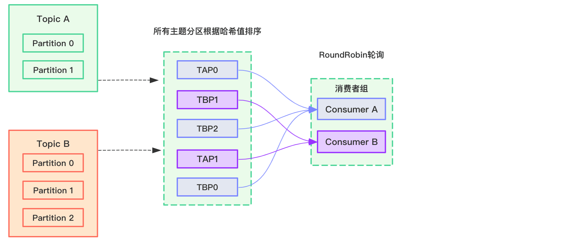
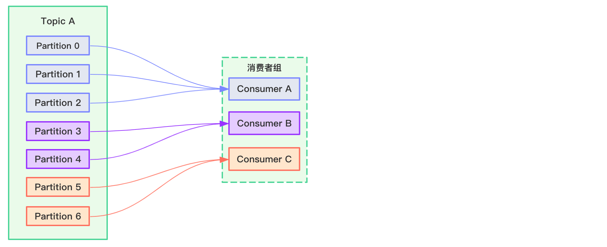
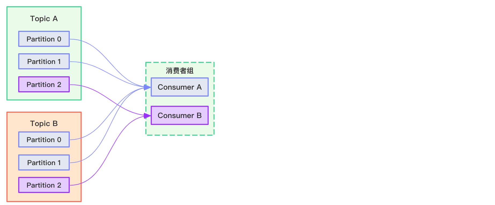

Kafka消费者采用pull拉模式从broker中消费数据。与之相对的push（推）模式很难适应消费速率不同的消费者，因为消息发送速率是由 broker 决定的。它的目标是尽可能以最快速度传递消息，但是这样很容易造成 consumer 来不及处理消息。而 pull 模式则可以根据 consumer 的消费能力以适当的速率消费消息。pull 模式不足之处是，如果 kafka 没有数据，消费者可能会陷入循环中，一直返回空数据。针对这一点，Kafka 的消费者在消费数据时会传入一个时长参数 timeout，如果当前没有数据可供消费，consumer 会等待一段时间之后再返回，这段时长即为 timeout。
消费者组
消费者组（consumer group）与消费者之间密切相关。在Kafka中，多个消费者可以共同构成一个消费者组，而一个消费者只能从厲于一个消费者组，消费者组最为重要的一个功能是实现广播与单播的功能。一个消费者组可以确保其所订阅的Topic的每个分区只能被从属于该消费者组中的唯一一个消费者所消费；如果不同的消费者组订阅了同一个Topic，那么这些消费者组之间是彼此独立的，不会受到相互的干扰。
分区分配策略
一个 consumer group 中有多个 consumer，一个 topic 有多个 partition，所以必然会涉及到 partition 的分配问题，即确定那个 partition 由哪个 consumer 来消费。
Kafka 有两种分配策略，一是 RoundRobin，一是 Range。
RoundRobin
RoundRobin即轮询的意思，比如现在有一个三个消费者ConsumerA、ConsumerB和ConsumerC组成的消费者组，同时消费TopicA主题消息，TopicA分为7个分区，如果采用RoundRobin分配策略，过程如下所示：

这种轮询的方式应该很好理解。但如果消费者组消费多个主题的多个分区，会发生什么情况呢？比如现在有一个两个消费者ConsumerA和ConsumerB组成的消费者组，同时消费TopicA和TopicB主题消息，如果采用RoundRobin分配策略，过程如下所示：

注：TAP0表示TopicA Partition0分区数据，以此类推。
这种情况下，采用RoundRobin算法分配，多个主题会被当做一个整体来看，这个整体包含了各自的Partition，比如在Kafka-clients依赖中，与之对应的对象为TopicPartition。接着将这些TopicPartition根据其哈希值进行排序，排序后采用轮询的方式分配给消费者。
但这会带来一个问题：假如上图中的消费者组中，ConsumerA只订阅了TopicA主题，ConsumerB只订阅了TopicB主题，采用RoundRobin轮询算法后，可能会出现ConsumerA消费了TopicB主题分区里的消息，ConsumerB消费了TopicA主题分区里的消息。
Range
Kafka默认采用Range分配策略，Range顾名思义就是按范围划分的意思。
比如现在有一个三个消费者ConsumerA、ConsumerB和ConsumerC组成的消费者组，同时消费TopicA主题消息，TopicA分为7个分区，如果采用Range分配策略，过程如下所示：

假如现在有一个两个消费者ConsumerA和ConsumerB组成的消费者组，同时消费TopicA和TopicB主题消息，如果采用Range分配策略，过程如下所示：

Range算法并不会把多个主题分区当成一个整体。
offset维护
offset由消息的主题Topic+分区Partition和消费者组名称唯一确定。
由于 consumer 在消费过程中可能会出现断电宕机等故障，consumer 恢复后，需要从故 障前的位置的继续消费，所以 consumer 需要实时记录自己消费到了哪个 offset，以便故障恢 复后继续消费。
Kafka 0.9 版本之前，consumer 默认将 offset 保存在 Zookeeper 中，从 0.9 版本开始， consumer 默认将 offset 保存在 Kafka 一个内置的 topic 中，该 topic 为__consumer_offsets。
「尚硅谷大数据技术之 Kafka」 学习笔记